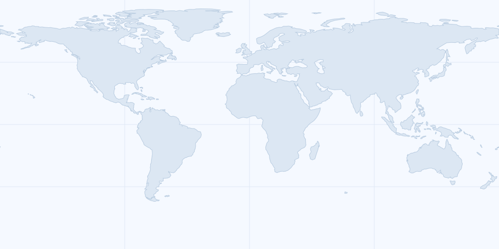

WORLD COMPASS
世界方位
CURRENT TARGET
AICHI, JAPAN
愛知県・名古屋市中心部
N
E
S
W
49°北東
現在地：台北（デモ地点）「現在地を取得」を押すと、端末の位置へ更新します。
方位磁針：未開始端末の向きを使う場合は「方位磁針を開始」を押してください。
WORLD LINE
1,854km
現在地から目的地
現在地台北（デモ地点）
目的地愛知

青い点が現在地、赤い点が目的地です。赤線は道路や航路ではなく、2地点の位置関係を示す直線です。
移動時間の目安
直線距離換算
徒歩なら
約16日
比較用の概算です。徒歩・車・電車は海・国境・実際の経路を考慮していません。飛行機は搭乗準備時間を含み、宇宙船は遊び表示です。
COUNTRY FLAGS
196国・地域
国旗から世界を見る
国旗を選ぶと、現在地からその国の首都までの方角・距離・移動時間を表示します。
首都日本・東京
方角北東 49°
距離1,854km
日本は東京を表示します。上部のAICHIは愛知県・名古屋を示す固定ボタンとして残ります。香港は中心都市として表示します。